Turning Grafruitti from cult classic to cultural phenomenon.
ROLE
Lead Creative | Director
It’s been 8 years of national mourning since the iconic Grafruitti left our shelves.
But the beloved cult-favourite is #BackForTheBelievers.
Our campaign centred around Grafruitti’s devoted fans, shining a spotlight on their relentless devotion. The ones who tweeted, tagged, begged, petitioned, and literally threatened us to ‘bring it back, you cowards’.
We fuelled the gossip with carefully crafted tease assets, liking old fan messages and seeding cryptic clues to superfans.
We launched with a hero film starring Jude Bellingham alongside a run of creators and genuine superfans, then took the holy nectar straight to the door of one fan who's publicly begged for its return online. OOH across the country carried real fans' own words, declaring Grafruitti was finally back.
To add to the drama, we released it on April 1st, creating engagement around whether the entire thing was an April Fool. (The only fools around here, pal, are the ones who didn’t immediately go and grab a bottle.)
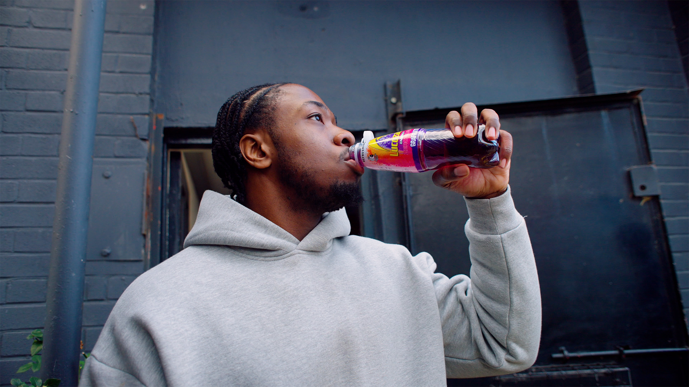
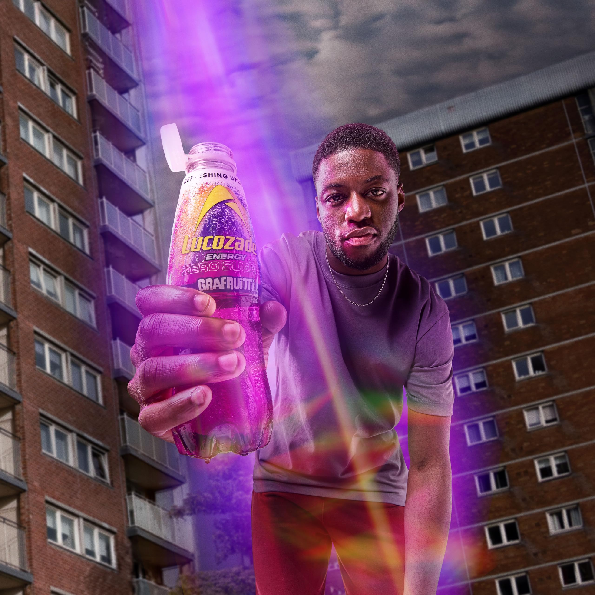
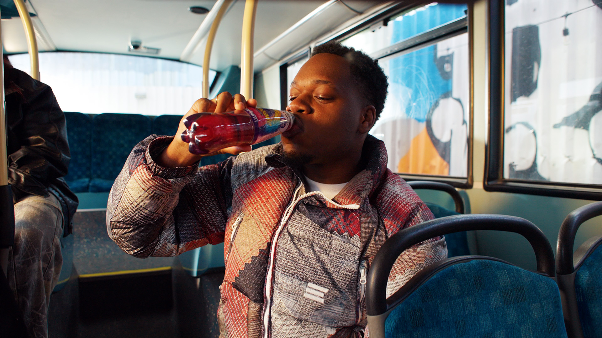
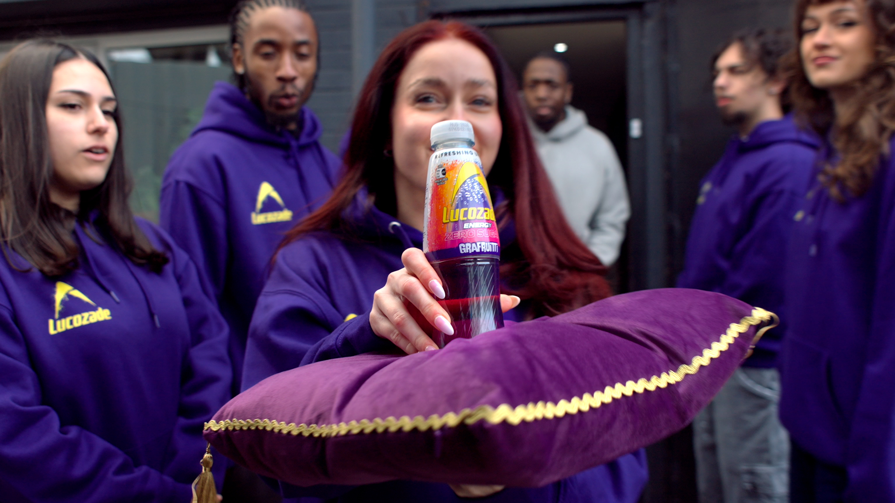
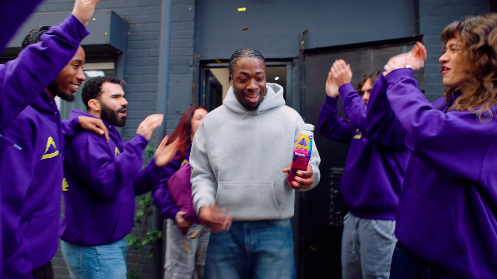
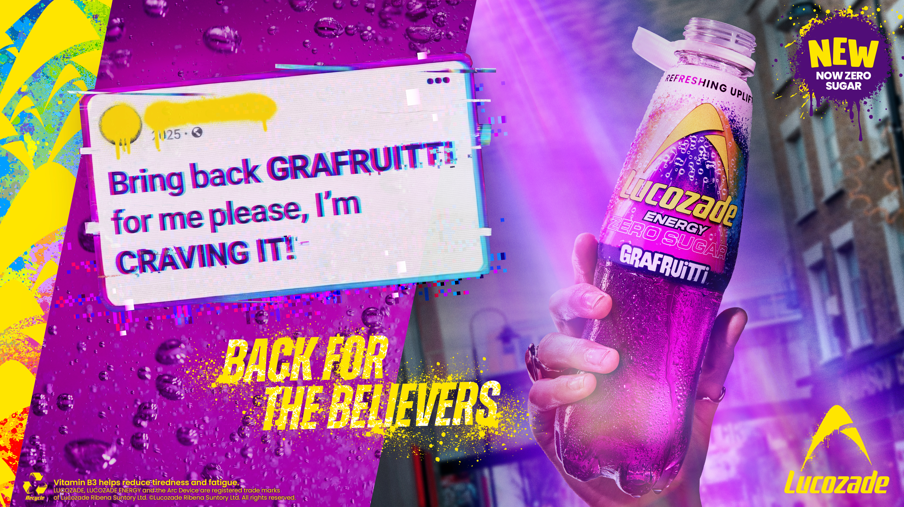
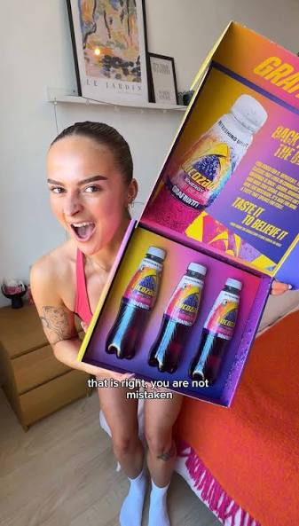
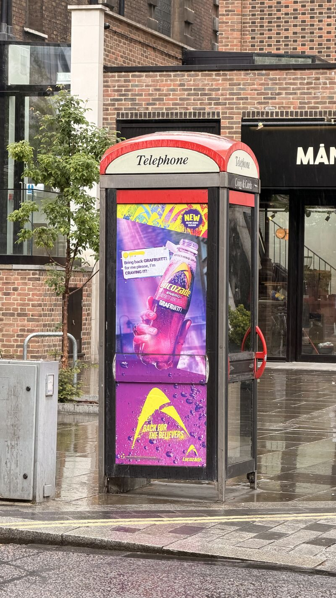
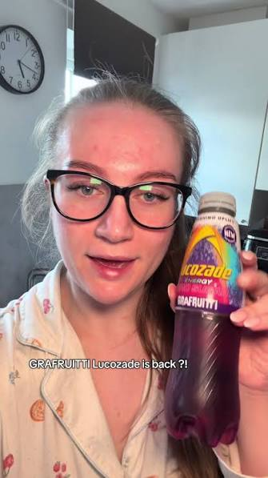
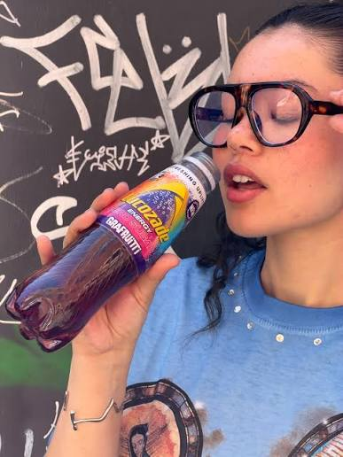
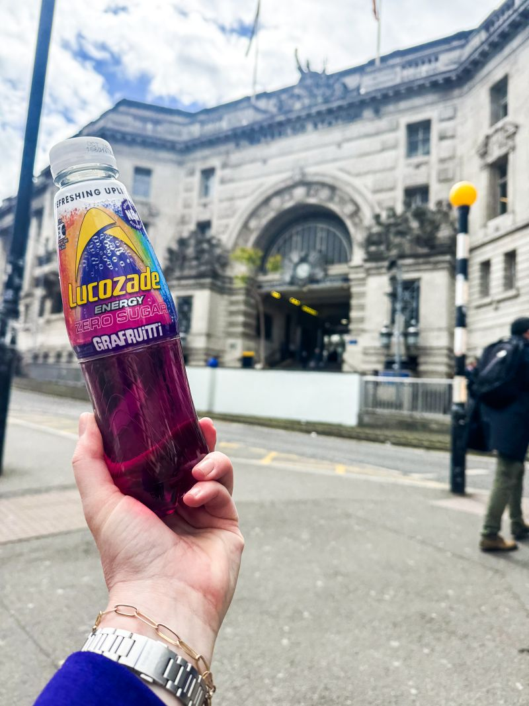
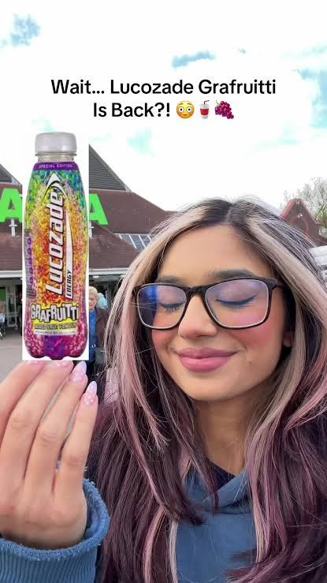
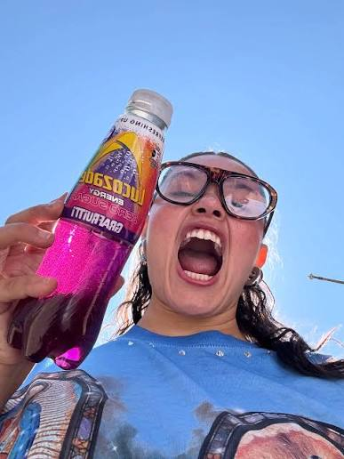
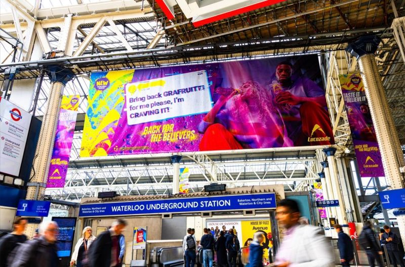
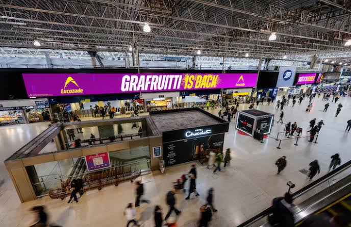
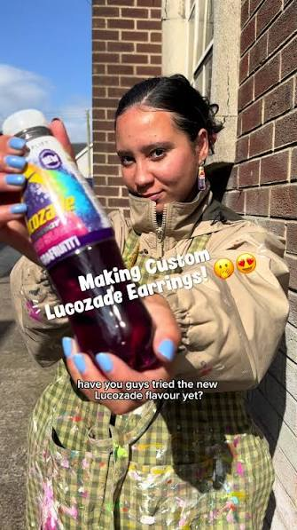
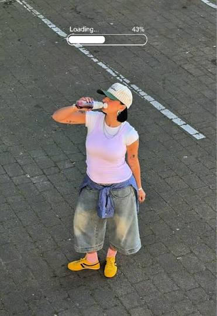
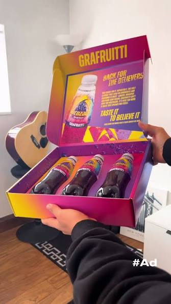
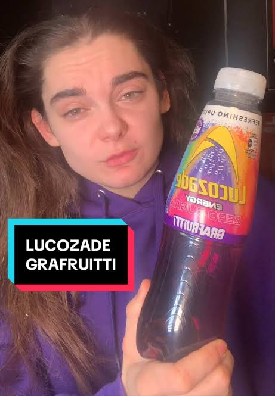
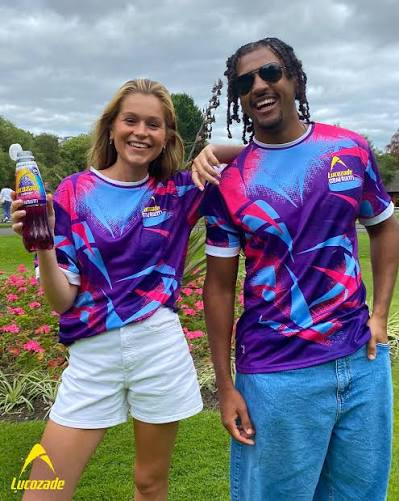
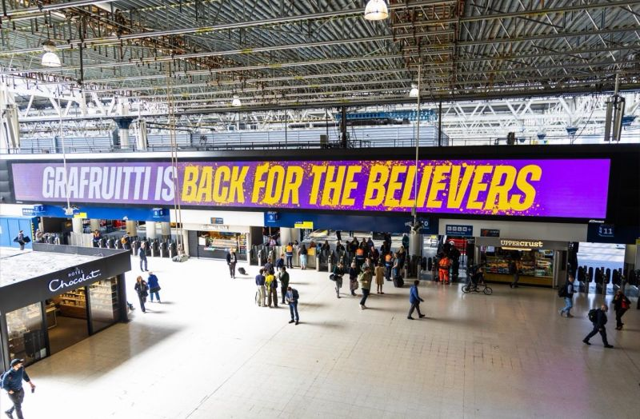
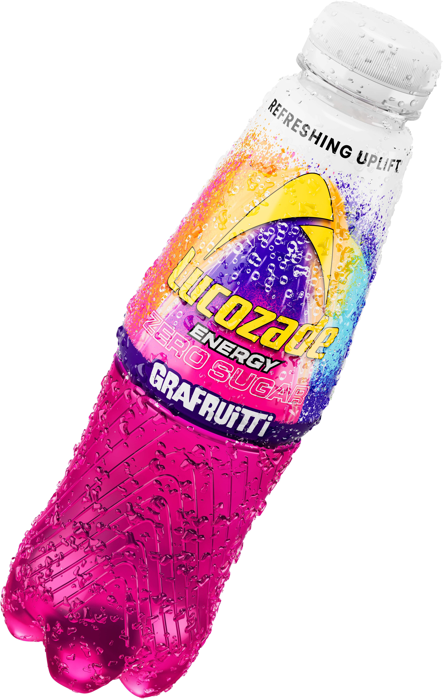
“This launch generated a surge in organic UGC leading to Lucozade’s most successful NPD launch ever. Graffrutti sold more in week one than all our other NPD launches combined.”
LUCOZADE CLIENT